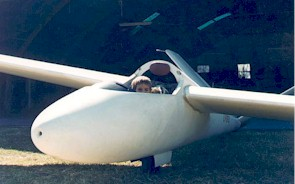

|
Club de Planeadores Los Caranchos |
|
Esta información fué obtenida del Alex's Sailplane Directory: Schempp-Hirth
Standard Austria  Specifications
Performance
Other
The Standard Austria was developed in 1959 by the Austrian Aero Club and won the 1960 OSTIV prize for the best Standard Class design entered in the World Championships at Koln-Butzwelerhof in Germany. 14 were built in Austria before production was licensed and transferred to Schempp-Hirth in Germany. Schempp-Hirth produced 30 Austrias and 5 improved and slightly heavier Austria SH’s. All these Austrias had an NACA 65(2)-415 airfoil. Standard Austrias held the world goal recor of 737 km./ 458 miles and the world goal-and-return record of 698 km./ 434 miles. In 1964 a modified version appeared with an Eppler 266 airfoil to improve low-speed performance. A retractable gear was optional (making it a SH-I), giving much improved ground clearance. The Standard Austria has an all-moving V-tail and airbrakes. ATC |
Información de contactoSi usted tiene deseos de volar en planeador, no dude en contactarnos
|